From Context to Canvas: Benchmark Dataset and Verify-then-Route Framework for Multi‑Subject Reference-Based Image Generation
1University of Science, Ho Chi Minh City, Vietnam 2Vietnam National University, Ho Chi Minh City, Vietnam 3University of Dayton, Ohio, USA †Equal contribution ‡Corresponding author
Inputs
- SceneBien Ba Dong
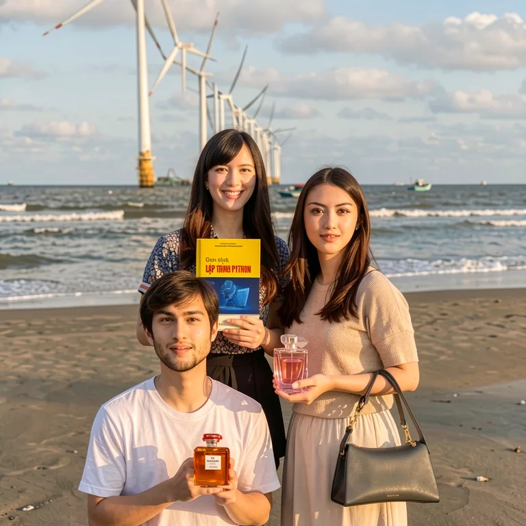
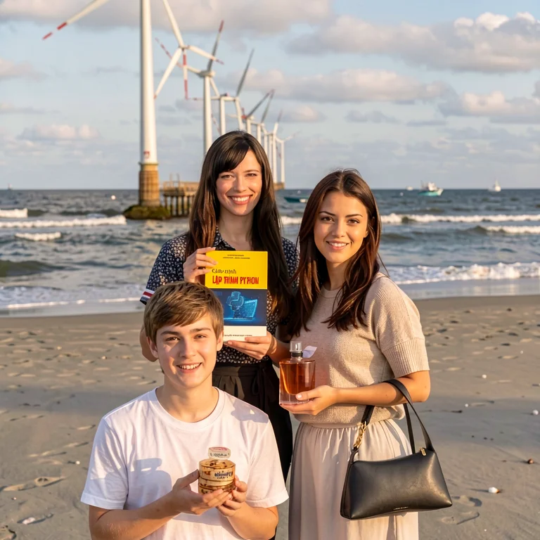
Scene graph from the prompt
7 / 7 entities verified
TL;DR: Multi-subject generators collapse as people are added. We release CogCanvas, a benchmark that measures it, and Context2Canvas, a training-free method that verifies the layout, then routes each reference to its own region.
Abstract
Personalized image generation should compose several people, each with the right objects and outfits, in a specified scene, yet current generators collapse as references are added and existing benchmarks do not capture this degradation. We introduce CogCanvas, a benchmark of 1,361 compositional prompts with 2–5 subjects, 1,952 curated references (100 people, 115 objects and fashion items, 29 scenes), and graphs specifying interactions and spatial relations. It adds two metrics: BG-Sim for background fidelity outside foreground regions, and Attr-VQA for person–item binding, with 76.5% agreement with human majority judgments.
We also propose Context2Canvas, a training-free multi-agent framework built on a verify-then-route principle: agents verify a layout against a hierarchical scene graph, and its masks then route each reference to its own region in a two-phase renderer that grounds references independently before refining them jointly. Context2Canvas achieves 2.5× the attribute-binding score of the strongest published baseline, with larger gains as the subject count increases.
CogCanvas benchmark
1,361 prompts with 2–5 people, built from 1,952 references: 100 identities, 115 objects and outfits, 29 real scenes.
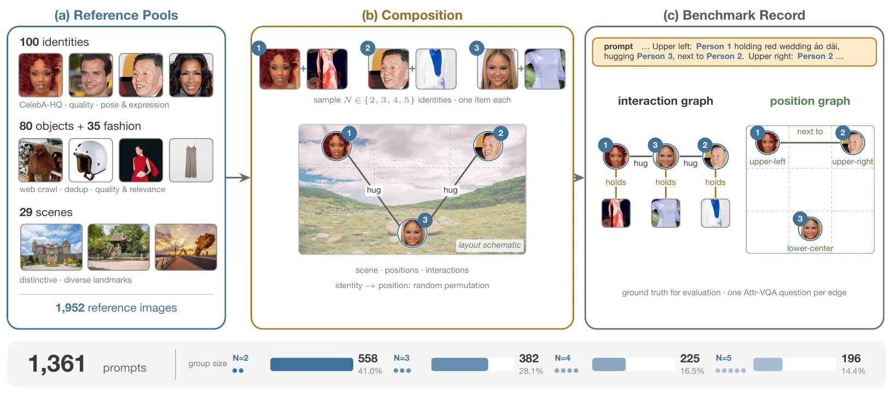
Six axes, two new
- ID-SimFace identity, ArcFace
- DINO-SimObject and outfit fidelity, DINOv2
- CLIP-TGlobal text alignment
- BG-SimScene fidelity outside the subjects
- Aesth.Image quality
- Attr-VQAWho holds what: one question per graph edge
Attr-VQA matches the human majority on 76.5% of 515 questions.
Compared with existing benchmarks Only CogCanvas tests interaction, background, and spatial layout together
| Benchmark | Venue | Prompts | Human refs | Object refs | Interaction | Background | Spatial |
|---|---|---|---|---|---|---|---|
| T2I-CompBench | NeurIPS’23 | 6,000 | 0 | 0 | – | – | Partial |
| DreamBench | CVPR’23 | 750 | 0 | 30 | – | – | – |
| DreamBench++ | ICLR’25 | 1,350 | 20 | 110 | – | – | – |
| MultiHuman-TB | NeurIPS’25 | 1,800 | 5,550 | 0 | Partial | – | – |
| XVerseBench | NeurIPS’25 | 300 | 20 | 119 | Partial | – | – |
| CogCanvas | – | 1,361 | 100 | 115 | Yes | Yes | Yes |
Context2Canvas: verify, then route
Training-free. Verify the layout against a scene graph, then route each reference into its own region.
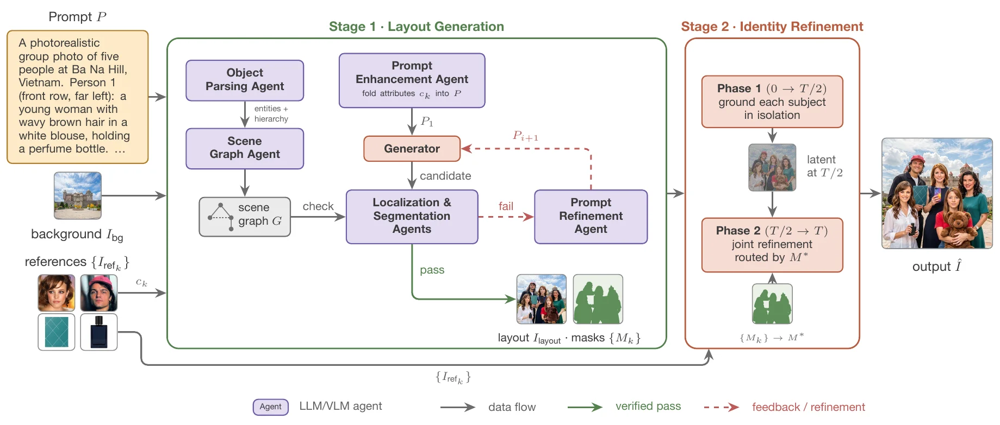
Stage 1Verified layout
Agents compile the prompt into a scene graph, then repair the layout until every entity is found.
- Object Parsing
- Scene Graph
- Prompt Enhancement
- Localization
- Prompt Refinement
Stage 2Two-phase identity refinement
- FLUX.2-klein
- Fixed routing mask
- RoPE offset per reference
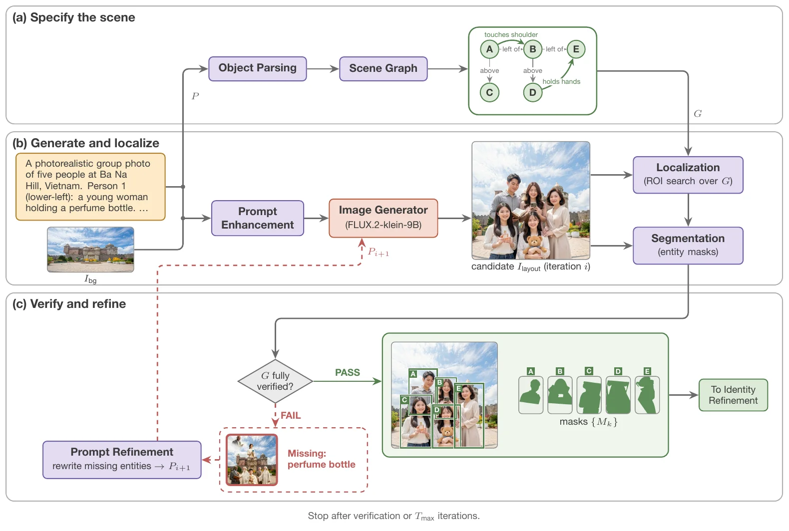
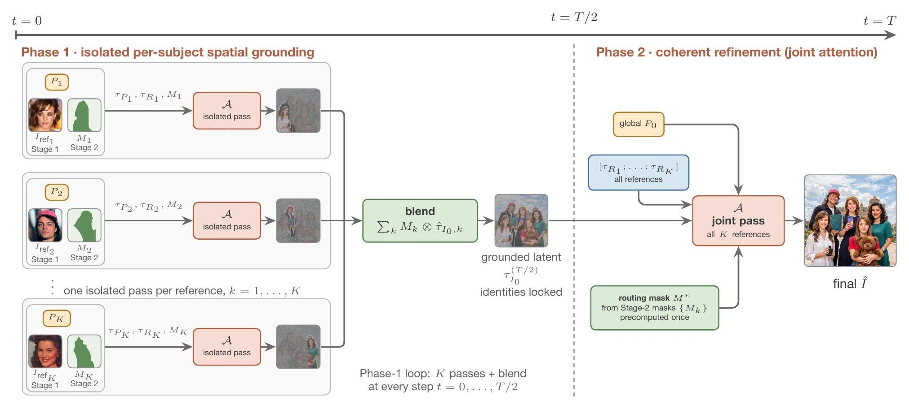
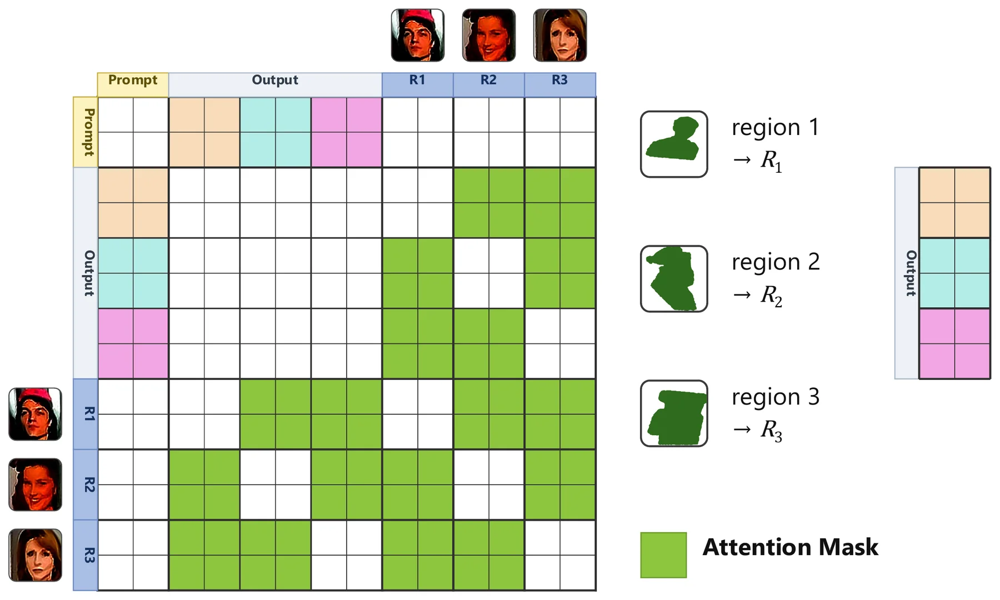
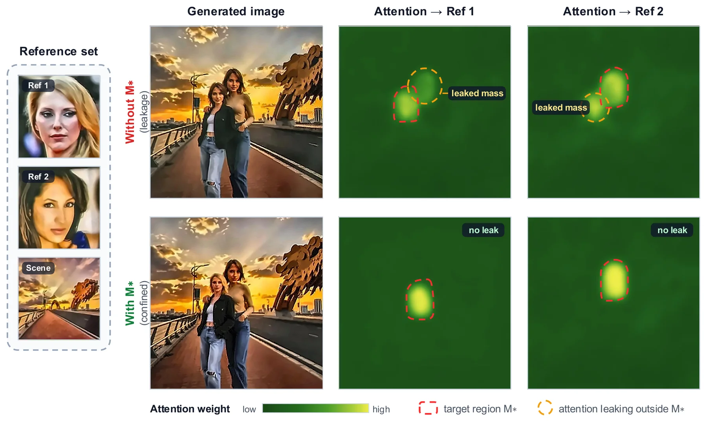
Verification in action
Crowded scenes and long prompts make the generator drop or add people. The check catches each error and tells Prompt Refinement what failed.
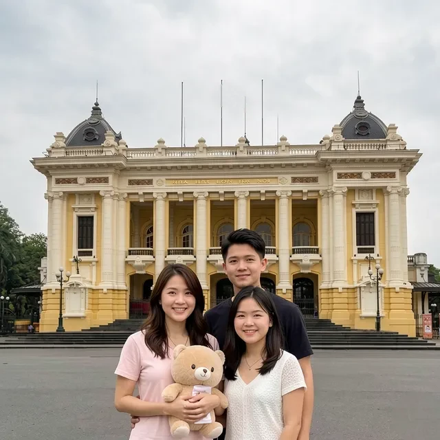
Iterations bar height = prompt length
Full prompt
Results
First on all six axes. 2.5× the Attr-VQA and 1.7× the ID-Sim of the strongest published method.
More people, less binding
Attr-VQA, N = 2 → N = 5
| Method | ID ↑ | DINO ↑ | CLIP-T ↑ | BG ↑ | Aesth. ↑ | Attr-VQA ↑ |
|---|---|---|---|---|---|---|
| OmniGen2 | 5.61 | 14.41 | 59.46 | – | 43.07 | 15.89 |
| UNO | 19.35 | 19.91 | 61.17 | – | 54.77 | 22.00 |
| DreamO | 1.40 | 2.94 | 57.96 | – | 42.23 | 7.79 |
| XVerse | 25.51 | 18.40 | 59.89 | – | 38.40 | 5.04 |
| MOSAIC | 7.72 | 3.97 | 57.36 | – | 41.55 | 6.90 |
| 1-pass (FLUX.2) | 23.94 | 23.90 | 59.34 | 0.649 | 56.18 | 32.62 |
| SRI | 33.68 | 27.22 | 61.45 | 0.667 | 55.41 | 39.57 |
| Context2Canvas | 44.22 | 32.49 | 66.10 | 0.819 | 62.60 | 54.77 |
Side by side
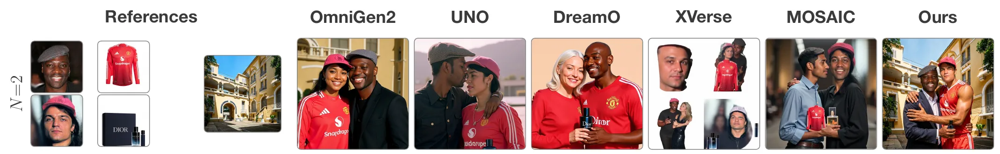
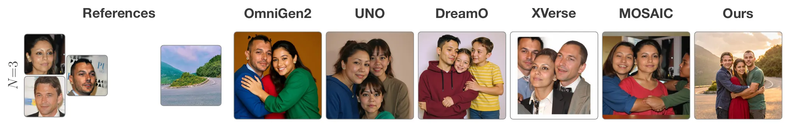
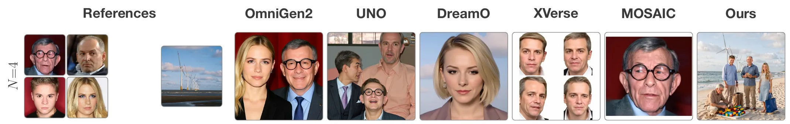
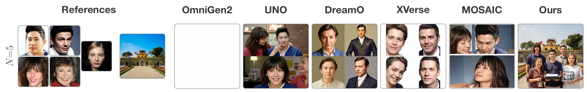
Human preference Ours preferred in 77–93% of blind pairwise votes
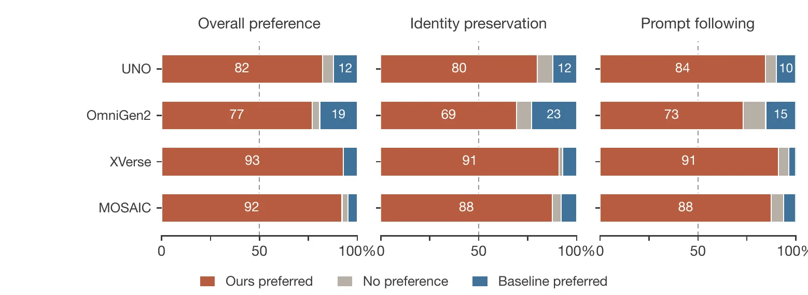
Ablation Every component matters; routing rule is a trade-off
| Variant | ID ↑ | DINO ↑ | CLIP-T ↑ | BG ↑ | Aesth. ↑ | Attr-VQA ↑ |
|---|---|---|---|---|---|---|
| Full | 44.22 | 32.49 | 66.10 | 0.819 | 62.60 | 54.77 |
| No verification | 37.08 | 43.39 | 62.74 | 0.759 | 60.86 | 44.78 |
| No verification, same attempts | 36.87 | 32.58 | 62.70 | 0.757 | 61.63 | 38.37 |
| No Phase 1 | 28.42 | 21.40 | 63.47 | 0.817 | 37.87 | 45.19 |
| No Phase 2 | 29.42 | 14.83 | 37.26 | 0.832 | 36.83 | 42.93 |
| No RoPE offset | 12.70 | 31.33 | 63.93 | 0.815 | 63.59 | 52.99 |
| Online winner-take-all routing | 38.20 | 39.53 | 64.26 | 0.831 | 63.08 | 56.72 |
- Verification lifts ID-Sim and Attr-VQA. DINO-Sim rises without it.
- Both phases are needed: Attr-VQA drops without either.
- Fixed mask vs online routing: fixed favors identity and text, online favors binding.
- Cost: 430 s per image on one A100, 5.46× one FLUX pass.
BibTeX
@article{nguyen2026context2canvas,
title = {From Context to Canvas: Benchmark Dataset and Verify-then-Route
Framework for Multi-Subject Reference-Based Image Generation},
author = {Nguyen, Long-Bao and Le, Quang-Khai and Nguyen, Tam V. and
Tran, Minh-Triet and Le, Trung-Nghia},
journal = {arXiv preprint arXiv:2606.15867},
year = {2026}
}